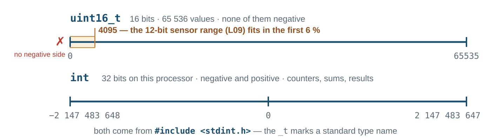
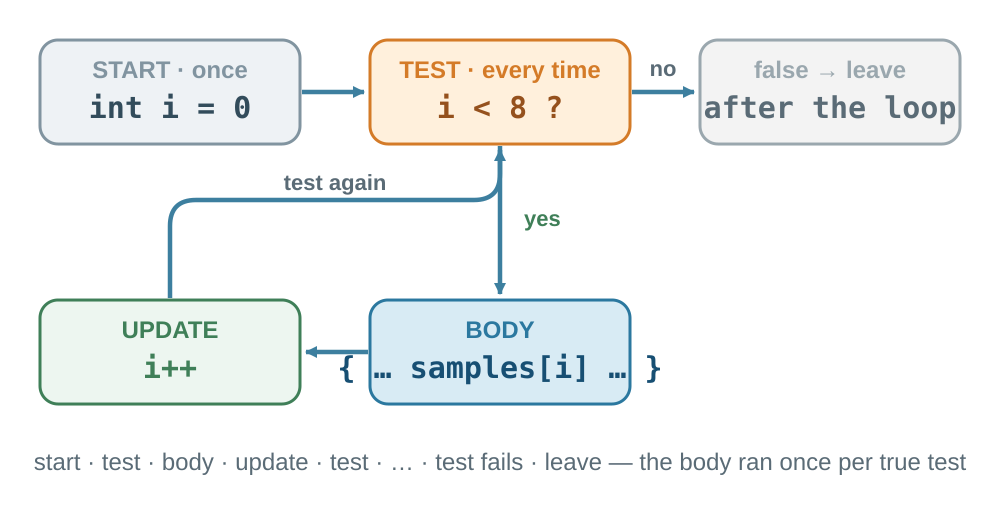
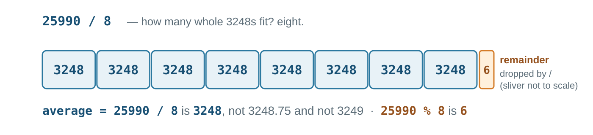
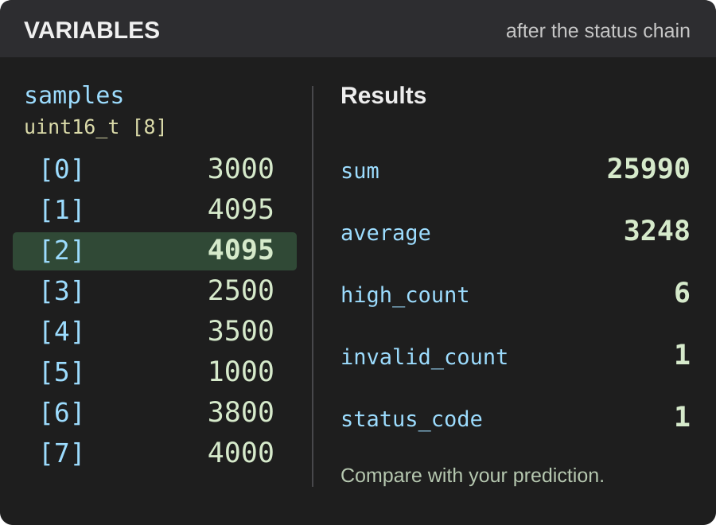

EE5203 Microprocessors
L02 - Values, Decisions, Loops, and Arrays
Opening challenge
Eight numbers arrive from a sensor. How does one C program turn them into a decision?
Today you learn to read every line of that program and predict its result before the debugger shows it.
L01 exit ticket — the answers
EVIDENCE
What observation proves new firmware reached the board?
A successful download report and behaviour that matches the changed code. A blinking LED alone proves nothing: the old firmware blinked too.
PREDICTION
What changes when 500 becomes 100?
The LED toggles every 100 ms — five times faster — and toggle_count climbs five times faster. Everything else stays the same.
QUESTION
Which part of the workflow was least clear?
Top answer from your forms goes here before class — we open the lab brief with it.
Today’s route
Declare the data · visit it with a loop · clamp, add, count in the body · average and status after the loop · prove every number in the debugger. One main.c, no functions yet.
Eight values, one name
01 uint16_t — the type of every element · samples — one name for all eight · [8] — eight places.
02 The braces list the initial values first to last; the eighth value fills samples[7]. These are simulated readings — 4200 is planted on purpose to exercise the validation code.
Why uint16_t

uint unsigned: no negative side · 16 sixteen bits: 0 to 65535 · _t a standard type name. The sensor band 0…4095 fits with room to spare; use plain int for counters and results — eight clamped samples total at most 8 × 4095 = 32760, well inside int.
Selecting one element
Indices start at 0, so eight elements are samples[0] … samples[7]. samples[8] is outside the array — and C will not stop you from reading it.
Counters start at zero
A declaration with = 0 creates the variable and sets its first value — without the = 0 it holds whatever that memory held before. An assignment stores a new value — it asks no question. Statements run in order: read invalid_count, add 1, store the result; then do it again. After line 8 it is 2. The program writes this step as invalid_count++.
Arithmetic on values
| Operator | On two int values |
|---|---|
+ - * |
the exact result — while it fits in the type |
/ |
the whole part only: 10 / 3 is 3 |
% |
the remainder: 10 % 3 is 1 |
x++ |
add one to x |
x += n |
add n to x |
Nothing is rounded: / drops the fraction. Predict now: the eight samples add up to 25990 — what is 25990 / 8? We check it on the verdict slide.
Visiting all eight
01 START: int i = 0 — once, before anything else.
02 TEST: i < 8 — before every repetition; false ends the loop.
03 UPDATE: i++ — after each run of the body, then test again.

Eight copies of the same statement would work — once. The loop works for eight, eighty, or eight thousand values by changing one number.
Trace it
| Step | i |
i < 3? |
body | total after |
|---|---|---|---|---|
| 1 | 0 | yes | total += 0 |
0 |
| 2 | 1 | yes | total += 1 |
1 |
| 3 | 2 | yes | total += 2 |
3 |
| stop | 3 | no | — | 3 |
The body runs three times, not four: it sees i = 0, 1, 2 and never 3 — i reaches 3 only to fail the test. This is the warm-up loop of your lab — trace it again there without looking.
Off by one
i < 8 stops after samples[7]. i <= 8 makes a ninth visit to samples[8] — memory that belongs to something else. No error message is guaranteed: usually wrong numbers, sometimes a crash — and the compiler may not warn.
while and the forever loop
Repeat while a condition holds
The same three parts as for, spread over three lines. The test comes first, every time; the body runs with count = 0, 1, 2; the loop ends when count becomes 3. Forget count++ and it never ends.
Which statement when? for gathers START · TEST · UPDATE on one line for a known range · while spreads them out and repeats while a condition holds · while (1) keeps firmware alive · next: if, which runs a block once or skips it.
The first decision: clamp
Test samples[i] > 4095. True → run the block: replace the value, count the fault. False → skip it. For i = 2 the test is true; for every other index it is false. Predict: does 4095 change? Does 4096?
Comparison operators
| Expression | The question it asks | Example |
|---|---|---|
a == b |
equal? | status_code == 0 |
a != b |
different? | i != 8 |
a < b |
smaller? | i < 8 |
a <= b |
smaller or equal? | average <= 3000 |
a > b |
larger? | samples[i] > 4095 |
a >= b |
larger or equal? | average >= 1500 |
A comparison asks; it changes neither side. The answer is 1 (true) or 0 (false), and if, while, and for act on that answer.
= versus ==
Assignment stores
After this statement status_code holds 0. Whatever it held before is gone.
if (status_code = 1) compiles, runs, and is always true: it stores 1, and 1 counts as true. GCC warns about it with -Wall (already on in your CubeIDE project) — read the warning.
Meant: if (status_code == 1) — the question, not the store.
Accumulate
int sum = 0; /* before the loop */
for (int i = 0; i < 8; i++) {
sum += samples[i]; /* add this element, already clamped */
}sum collects one element per repetition — [2] is already 4095, because the clamp runs first in the body. It must start at 0 before the loop: a leftover start value would sit inside every later total.
Count with a condition
for (int i = 0; i < 8; i++) {
if (samples[i] > 4095) {
samples[i] = 4095;
invalid_count++;
}
sum += samples[i];
if (samples[i] > 2500) {
high_count++;
}
}One loop, three jobs per element — clamp, add, count — read as one element’s story, repeated eight times. Predict: with >= instead of >, what is high_count? (2500 is in the data.)
Average after the loop

Both operands are integers, so / keeps the whole part: average is 3248; the remainder 6 is dropped. Inside the loop this line would run eight times on a partial sum — it belongs after the loop.
The status chain
if (average < 1500) {
status_code = -1; /* LOW */
} else if (average > 3000) {
status_code = 1; /* HIGH */
} else {
status_code = 0; /* OK */
}Tests run top to bottom, stop at the first true one, exactly one block runs — on the average, not on any single sample. Here 3248 > 3000: lines 3–4 run, the else is skipped.
Combining conditions
The chain reaches OK by elimination; && states the band directly — same result, both limits visible. Parentheses whenever the grouping is not obvious.
The complete program
1 · data
2 · loop 3 · body
Twenty-eight lines in four blocks. Around them: #include <stdint.h> at the top of the file and int main(void) { … } — both already in your L01 project; the blocks go in USER CODE BEGIN 2. Read it top to bottom once more — then predict the six results before the next slide.
Predict, then verify
| Result | Prediction |
|---|---|
samples[2] after the loop |
4095 |
invalid_count |
1 |
high_count |
6 |
sum |
25990 |
average |
3248 |
status_code |
1 |

Write the prediction first, break after the status chain, then compare — the debugger is the output device this term. Your lab set has different numbers; the method is the same.
Common L02 mistakes
| Symptom | First check |
|---|---|
| Condition is always true | = where == was meant — read the compiler warning |
Huge or garbage sum |
does sum start at 0 before the loop? |
| Wrong numbers, no error | i <= 8 reads samples[8] — the test must be i < 8 |
| Loop never ends | is i++ there? watch i in the debugger |
invalid_count is 8 |
braces missing — the clamp if owns two lines |
average wrong or changing |
it belongs after the loop, not inside it |
Unknown type uint16_t |
#include <stdint.h> at the top of the file |
Laboratory mission
A COPY
L01 project → EE5203_L02_<no>, builds clean
B DECLARE
eight uint16_t values, five int results
C LOOP
clamp · add · count, single-stepped
D VERDICT
average, status, prediction table
E CHANGE
your rule variant: predict, prove, explain
Rules: values above 4095 become 4095 · high means above 2500 · status -1 below 1500, 1 above 3000, else 0. Prediction table before debugging. Homework (10 pts) on CATS after the lab, due before Lab 3. Project track: write down what your project’s input data will be and what processing it needs.
Exit ticket
int values[4] = {3, 7, 2, 8};
int total = 0;
for (int i = 0; i < 4; i++) {
if (values[i] > 4) {
total += values[i];
}
}- Which elements are added?
- What is the final value of
total? - What invalid access would occur if the condition were
i <= 4?

Scan — or open the form — and answer before you leave; sign in with your Google account. Ungraded; your answers open the next lecture.
Next: functions, arrays, strings, and modular C. · Every concept in this lecture, with page-linked sources: academic references.
EE5203 - L02